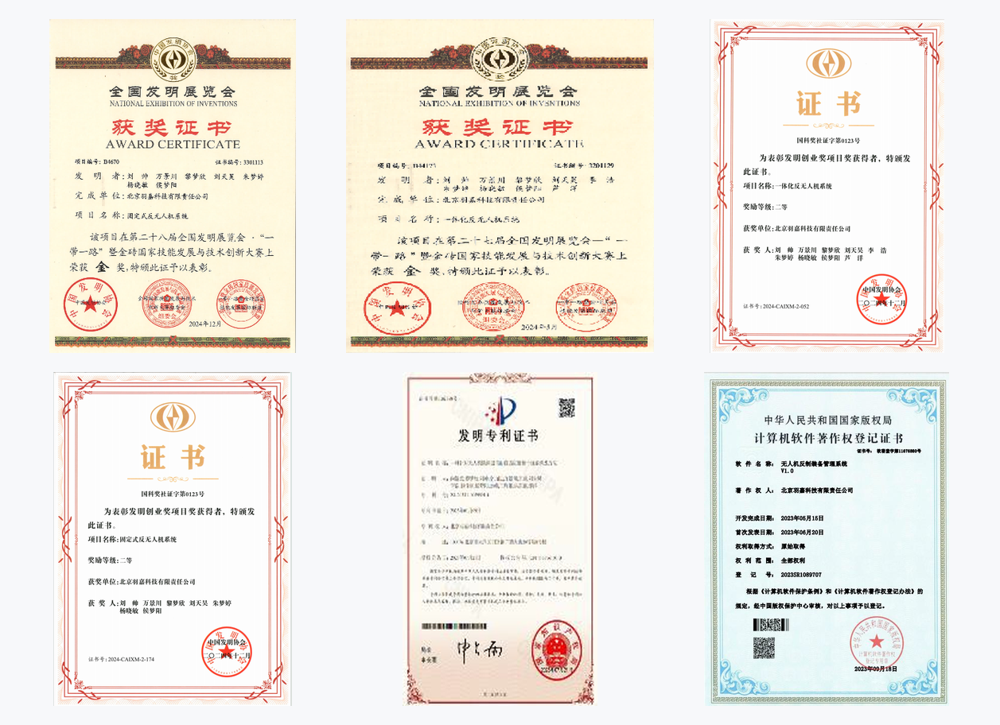
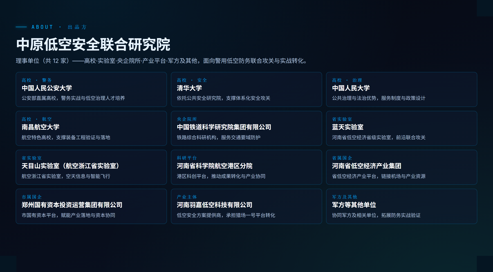
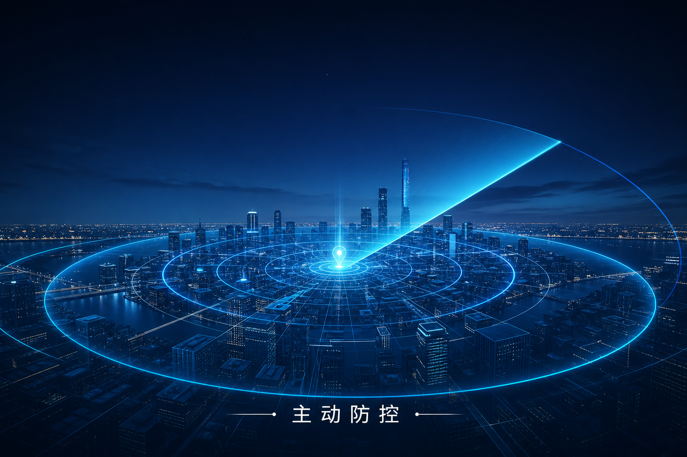

羽嘉科技成立于 2020 年，总部位于郑州航空港区，专注城市级低空安全。团队由两大院士团队成员组成，依托中原低空安全联合研究院 12 家理事单位，研发「猎场一号」警用低空防务智能实战平台。
关注这个账号的朋友，多半关心同一件事：低空越来越热闹，安全怎么办？
在正式开始每天的行业内容之前，先花几分钟介绍一下我们自己——羽嘉科技是谁，凭什么做低空安全。
01 一家生在低空经济起点上的公司
河南羽嘉低空科技有限公司成立于 2020 年 6 月，北京注册起步，现总部位于郑州航空港经济综合实验区。彼时「低空经济」还不是热词，但无人机「黑飞」带来的安全问题已经显现。我们选择的方向从一开始就很明确：专注城市级低空安全，做低空安全解决方案提供商。
之后几年，低空经济写入国家规划、成为战略性新兴产业，安全治理体系的建设需求随之爆发。方向对了，剩下的就是把技术做扎实。
02 底色：清华安全 + 北航无人机
低空安全是个交叉领域：既要懂「安全」，也要懂「无人机」。
羽嘉科技的团队由两大院士团队成员组成——清华大学公共安全研究院范维澄院士团队，代表「安全」这条线；北京航空航天大学向锦武院士团队，代表「无人机」这条线。公共安全的体系化方法论，加上航空器与飞行控制的工程能力，构成了我们做低空安全的底层能力。
在工程侧，公司具备军工级资质体系，核心反制技术拥有国家发明专利，曾获全国发明展览会金奖 2 项，累计取得软件著作权 16 项，从底层算法到整机系统全部自研、自主可控。

03 背后：一个 12 家单位组成的联合研究院
单靠一家公司做不成城市级的低空安全。羽嘉科技是中原低空安全联合研究院的产业转化主体——这个研究院由 12 家理事单位组成，覆盖高校、省实验室、央企院所与产业平台：
高校侧有中国人民公安大学、清华大学、中国人民大学、南昌航空大学；科研与产业侧有中国铁道科学研究院、蓝天实验室、天目山实验室、河南省科学院航空港区分院、河南省低空经济产业集团、郑州国有资本投资运营集团等。
研究院负责联合攻关，羽嘉负责把成果变成能落地、能实战的产品。「天罗工程」解决方案和「猎场一号」平台，都是在这个平台上打磨出来的。

04 我们相信的事
低空经济的未来有多大，取决于低空安全的底线有多牢。发展和安全从来不是对立的——管得住，才能放得开。
所以我们把一句话作为所有产品的出发点：让低空管理从「被动应对」转向「主动防控」。
这个账号会每天更新低空安全领域的政策解读、事件分析、技术科普与行业观察。如果你是公安、政府、园区、机场的低空管理相关工作者，欢迎关注、交流。

—— 关于我们 ——
羽嘉科技，城市级低空安全解决方案提供商，
「猎场一号」警用低空防务智能实战平台研发者。
让低空管理从「被动应对」转向「主动防控」。
商务合作：15515738319 ｜ yujiadikongkeji@163.com
免责声明：本文为企业介绍，仅供行业交流参考，不构成任何决策依据。